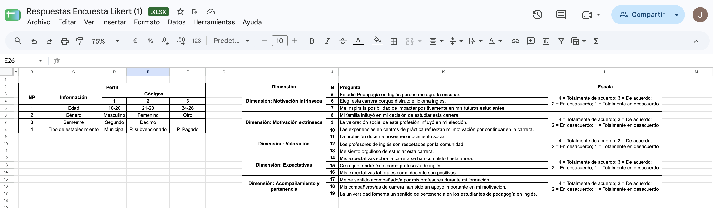

1 · Punto de partida
Tu camino
El análisis necesita datos ordenados. Si empiezas con la transcripción incompleta o con la base de datos desordenada, el tiempo se te irá en arreglar eso. Acá preparas tus datos, y el análisis lo haces después con el recurso de tu enfoque.
- Elige tu caminoMarca el instrumento que aplicó tu grupo. Cada uno tiene su propia preparación.
- Deja tus datos listosCompleta tu base de datos o ordena tu transcripción, y descárgala.
- Llega a analizarConfirma la lista de la vista 4 y entra al recurso de análisis de tu enfoque.
¿Qué instrumentos aplicó tu grupo?
Marca todos los que correspondan. Si aplicaron más de uno, prepara cada uno por separado.
2 · Encuesta
Tu base de datos
¿Qué sabes o puedes deducir sobre tu base de datos?
No necesitas saberlo todo de antemano: algunas respuestas se pueden deducir. Elige la que te parezca y lee la explicación.
¿Qué es tabular?
Tabular es traspasar las respuestas de tu instrumento a una tabla ordenada, llamada base de datos. En ella cada fila es un encuestado y cada columna una pregunta. Con esa tabla, en el análisis, el programa Jamovi cuenta cuántas veces aparece cada respuesta y calcula la media y la moda por ti. Al final de este recurso te indicamos cómo descargarlo.
Para empezar el análisis necesitas tu base de datos en Excel y subida a la carpeta Drive del curso.
Codifica tus respuestas
Codificar es asignar un número a cada respuesta. Estos son los tres casos más frecuentes. Usa siempre el mismo número para la misma respuesta.
Tu libro de códigos
Antes de digitar, anota qué significa cada número y qué dice cada enunciado. Si aplicaste encuestas a grupos distintos, agrega un perfil para cada grupo; así mantienes sus preguntas y respuestas separadas.
Numera todas las preguntas de corrido, en el orden en que aparecen en tu instrumento. Si el perfil tiene 4 preguntas (P1 a P4), el primer enunciado Likert es P5. Así ningún nombre se repite entre las hojas.
Así se ve un libro de códigos completo en Google Sheets (trabajo de un estudiante). A la izquierda, las preguntas de perfil con el significado de cada código; a la derecha, los enunciados Likert agrupados por dimensión.

¿Por qué no escribir "Hombre" o "Mujer" directamente en Excel?
Jamovi necesita números para calcular. Además, con palabras cualquier diferencia de escritura ("mujer", "Mujer", "Mujer " con un espacio al final) se cuenta como una categoría distinta y el gráfico sale con barras repetidas. Con números y un libro de códigos ese error no ocurre. Las palabras se escriben después, solo en la tabla de frecuencias que usarás para el gráfico.
Arma la estructura de la base
Así se ve una base ya tabulada. Cada fila es un encuestado y cada columna una pregunta (P1, P2…). Los valores son los códigos del libro de códigos.
En la columna "Encuestado" escribe solo el número de cada persona (1, 2, 3…), sin letras. La letra "P" se usa solo para las preguntas (P1, P2…).
Ejemplo con datos inventados. Hoja "Perfil" (P1 = Repitencia, P2 = Tiempo en el establecimiento, P3 = Género).
Hoja "Preguntas" (escala Likert). El perfil usó P1 a P3, así que los enunciados siguen desde P4. Por ejemplo, en una escala 1 a 4 tipo acuerdo, de "Totalmente en desacuerdo" a "Totalmente de acuerdo".
Completa tus tablas
Completa el libro de códigos y las respuestas de cada encuestado. Las tablas se ordenan en dos filas: arriba el libro de códigos (qué significa cada número) y abajo las respuestas. Al final descargas todo en un Excel.
Lo que escribas se guarda solo en este navegador y en este computador. Si cambias de equipo, usas una ventana privada o borras el historial, se pierde. Descarga el Excel cada vez que termines y súbelo a la carpeta Drive de tu grupo.
¿Aplicaste tu encuesta a más de un grupo, o aplicaste más de una encuesta? Agrégalo aquí
Elige lo que corresponde a tu estudio. Si lo agregas por error, puedes quitarlo con el botón «Quitar» que aparece junto a su nombre.
¿Tus entrevistas o grupos focales incluyeron preguntas de perfil (edad, años de experiencia…)? Esas respuestas también se tabulan aquí.
El Excel trae el libro de códigos, una hoja por cada perfil y la hoja Preguntas. Si tienes más de una encuesta, cada una se descarga en su propio Excel. Solo se incluyen las filas que tienen datos.
Revisa antes de analizar
Un error de digitación cambia la media de toda una pregunta. Dedica unos minutos a estas cuatro revisiones.
¿Y si mi instrumento tiene enunciados redactados en negativo?
Por ejemplo, "Me cuesta concentrarme en clases" dentro de una dimensión de motivación. En esos enunciados, estar de acuerdo expresa lo contrario que en el resto de la dimensión, y eso cambia la lectura de la tabla síntesis.
No los recodifiques por tu cuenta. Márcalos en tu libro de códigos y consúltalo en tutoría antes de completar la tabla síntesis.
3 · Entrevistas y grupo focal
Tu transcripción
¿Qué sabes o puedes deducir sobre tu transcripción?
No necesitas saberlo todo de antemano: algunas respuestas se pueden deducir. Elige la que te parezca y lee la explicación.
¿Qué es transcribir?
Transcribir es pasar a texto escrito todo lo que se dijo en una entrevista o grupo focal grabado. El texto permite leer con calma, marcar fragmentos, compararlos entre participantes y citarlos de forma textual en tu escrito.
Para empezar el análisis necesitas tus transcripciones completas y en formato literal limpio. Sin ellas no es posible avanzar.
¿Tu guion incluyó preguntas de perfil (edad, género, años de experiencia…)? Transcríbelas igual que el resto y, además, tabula esas respuestas en la vista 2 para describir a quienes participaron. Ahí, abre «¿Aplicaste tu encuesta a más de un grupo…?» y usa el botón «+ Perfil de informantes».
Base del análisis
La transcripción es el material que, en el análisis, se sube al programa Atlas.ti y desde el que se extraen las citas. Al final de este recurso te indicamos cómo obtenerlo.
Formato literal limpio
Se omiten muletillas, repeticiones y sonidos, y se conserva lo que dijo la persona con sus propias palabras.
Fidelidad
Nunca se agrega ni se completa lo que no se dijo. Lo que no se entiende se marca como [inaudible].
Elige el tipo de transcripción
El mismo fragmento en los tres formatos. En Seminario de Grado usamos la transcripción literal limpia.
Transcribe con una herramienta y revisa
Consejos y formato
Ver ejemplo de transcripción
Entrevistador: ¿Cómo cambió su forma de evaluar durante la pandemia?
Entrevistado: Tuve que cambiar las pruebas escritas por trabajos en grupo, porque en línea no podía controlar que no se copiaran. Al principio me costó mucho, sobre todo con [inaudible], pero después los estudiantes se acostumbraron.
Entrevistador: ¿Y cómo entregaba la retroalimentación?
Archivo E1CM1.docx. Al inicio de cada línea, escribe quién habla y luego dos puntos. Usa [inaudible] donde la grabación no se entiende. No uses negritas.
Ejemplo de grupo focal
En una misma grabación intervienen el moderador y varias personas. Identifica a quien modera como «Moderador» y a cada participante con un código estable: P1, P2, P3…
- Usa "Moderador:" para quien conduce y "P1:", "P2:", "P3:"… para cada participante. Cada persona conserva su número durante toda la transcripción.
- Un archivo por grupo focal, nombrado con su código (por ejemplo, F1.docx). Al citar, se unen ambos códigos: F1P2.
- Escribe cada intervención en una línea distinta. Si varias personas hablan a la vez y no puedes distinguirlas, marca [habla simultánea].
Ejemplo inventado solo para ilustrar.
Moderador: ¿Cómo cambió su forma de evaluar durante la pandemia?
P2: Yo pasé de las pruebas escritas a trabajos en grupo, porque en línea era difícil controlar la copia.
P3: Yo mantuve la prueba, pero le puse tiempo limitado. [habla simultánea]
P1: A mí me pasó parecido, sobre todo con la copia.
Evita los errores más frecuentes
Estos errores se detectaron en transcripciones de años anteriores. Los fragmentos se anonimizaron y algunos se adaptaron para explicar cómo corregirlos. Revisa siempre el borrador con la grabación.
| Error | Así apareció | Qué hacer |
|---|---|---|
| Nombres en lugar de roles | "A: Bueno, mucho gusto. Yo soy [nombre]…" "F: Ya." | Usa "Entrevistador:" y "Entrevistado:". Reemplaza los nombres de personas y establecimientos por [nombre] o [establecimiento]. |
| Nombres en lugar de códigos | "Moderador: ¿Qué opinan? Camila: Yo prefiero trabajar en grupo." | Identifica a quien modera como "Moderador" y asigna a cada participante un código estable ("P1", "P2"…). Reemplaza nombres de personas y establecimientos por [nombre] o [establecimiento]. |
| Muletillas y repeticiones | "…ordenar los contenidos, cierto, como dije anteriormente, también ayuda como a darle el sentido lógico, cierto a las clases…" | Quítalas sin cambiar las palabras de la persona. |
| Palabras mal reconocidas por la herramienta | "…cuando es la formación universaria…" "Que les vaya muy viendo…" | Escucha de nuevo ese tramo. Si confirmas la palabra, corrígela ("universitaria"). Si no se entiende, escribe [inaudible]. |
| Dos turnos de habla en una misma línea | "A: ¿Cómo guían a los estudiantes durante el proceso? F: Como no hay un formato específico para el área, les vamos mostrando qué hacer en cada etapa." | Empieza una línea nueva cada vez que cambia quién habla. |
| Varias intervenciones en una misma línea | "Moderador: ¿Qué opinan? P1: Me sirve trabajar en grupo. P2: Yo prefiero hacerlo individualmente." | Empieza una línea nueva para cada intervención. Mantén el mismo código (P1, P2…) durante toda la transcripción. |
| Respuestas cortadas | "…el propio uso del lenguaje a veces puede ponerte en problemas y también condicion" | Vuelve a la grabación y completa la frase. Si el audio se corta, marca [inaudible]. |
Antes y después
✗ Borrador sin revisar
A: ¿Consideras que la planificación es una guía útil o más bien un requisito administrativo?
F: Ya, claro. Considero que son... Ambas cosas porque al hacer el ejercicio de ordenar los contenidos, cierto, como dije anteriormente, también ayuda como a darle el sentido lógico, cierto a las clases, al contenido, todo eso.
✓ Literal limpia (archivo E1PH.docx)
Entrevistador: ¿Consideras que la planificación es una guía útil o más bien un requisito administrativo?
Entrevistado: Considero que son ambas cosas, porque al hacer el ejercicio de ordenar los contenidos, como dije anteriormente, también ayuda a darle el sentido lógico a las clases, al contenido.
→ Copia de trabajo para Atlas.ti
Pregunta 2: ¿Consideras que la planificación es una guía útil o más bien un requisito administrativo?
Considero que son ambas cosas, porque al hacer el ejercicio de ordenar los contenidos, como dije anteriormente, también ayuda a darle el sentido lógico a las clases, al contenido.
E1PH = Entrevistado 1, Pedagogía en Historia. Ejemplo anonimizado. La transcripción limpia conserva las palabras de la persona y pone cada intervención en una línea.
✗ Borrador sin revisar
Moderador: ¿Qué les ayudó a organizar el trabajo en grupo? Camila: Eh, repartir las tareas, cierto, repartir las tareas. Nicole: A mí me sirvió como acordar fechas.
✓ Literal limpia (archivo F1.docx)
Moderador: ¿Qué les ayudó a organizar el trabajo en grupo?
P1: Repartir las tareas.
P2: A mí me sirvió acordar fechas.
→ Copia de trabajo para Atlas.ti
Pregunta 2: ¿Qué les ayudó a organizar el trabajo en grupo?
P1: Repartir las tareas.
P2: A mí me sirvió acordar fechas.
F1 = Grupo focal 1. Ejemplo anonimizado. La transcripción limpia conserva las palabras de cada participante y pone cada intervención en una línea. En la copia de trabajo, mantén los códigos P1, P2… para saber quién dijo cada cosa; al citar, combínalos con el del grupo: F1P1, F1P2.
Ponte a prueba
Pega y ordena tu transcripción
Pega aquí el borrador de una transcripción (una por vez). El espacio te muestra qué falta ordenar, te deja corregirlo y te entrega el texto limpio, sin negritas, colores ni tipografías, listo para copiar o descargar.
Tu texto se guarda solo en este navegador y en este computador, no en internet. Si cambias de equipo, abres una ventana privada o borras el historial, se pierde. Se guarda una transcripción a la vez y se borra sola si pasan 14 días sin editarla porque las transcripciones tienen información confidencial. Descarga tu transcripción en Word y, si el computador es compartido, bórrala cuando termines.
¿Prefieres transcribir directo en Word? Descarga la plantilla, escribe cada turno con su etiqueta y luego pega el texto aquí para revisarlo. La plantilla usa el tipo que elegiste arriba.
Al pegar, se elimina automáticamente el formato (negritas, colores, tipografías). Solo queda el texto. Los cambios se guardan solos en este navegador.
Revisión
¿Ya está el Word en tu carpeta de descargas? Ábrelo y revisa que se vea bien. Si el computador es compartido, borra la transcripción de este navegador.
Aquí termina el paso 1
Para cerrar este paso, deja listo el programa que usarás y revisa la lista de tu camino. Cuando completes los puntos que corresponden a tu grupo, tendrás tus datos preparados para pasar al análisis.
Deja listo el programa de análisis
En el análisis trabajarás con un programa según tu enfoque. Los recursos de análisis te enseñan a usarlo paso a paso; acá solo tienes que dejarlo listo antes de esa sesión, así llegas directo a analizar.